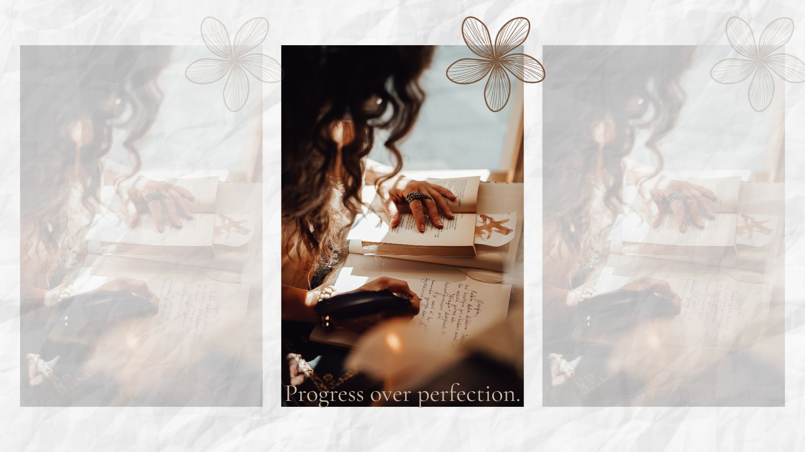

Progress Over Perfection
Small steps. Meaningful change. A reminder that growth does not require perfection.
Have you ever found yourself saying, "I'll start when everything is ready."
Maybe you'll begin journaling when life slows down. You'll organize your home after work becomes less stressful. You'll start prioritizing yourself once everyone else is taken care of.
The truth is, perfection rarely arrives.
When we wait for the perfect moment, we often miss the opportunity to begin.
🌿 Your Cozy Reset Reminder
You do not have to do everything perfectly to make progress.
Small steps still count.
The Hidden Cost of Perfectionism
Perfectionism can feel like motivation, but often it keeps us trapped in cycles of overthinking, self-doubt, and fear of making mistakes.
Instead of moving forward, we may find ourselves waiting until we feel more prepared, more confident, or more capable.
Perfectionism can contribute to:
- ✨ Increased anxiety
- ✨ Procrastination
- ✨ Fear of failure
- ✨ Burnout
- ✨ Feeling like you are never "good enough"
Why Small Steps Matter
Every small action sends your brain an important message:
"I can do hard things."
Confidence does not always come before action. Often, confidence grows because we take action.
One journal entry becomes a habit.
One walk becomes a healthier routine.
One deep breath becomes a moment of calm.
Small actions create momentum, and momentum creates lasting change.
Your Five-Minute Reset
When you feel overwhelmed, instead of asking yourself:
"What if I can't do it all?"
Try asking:
"What is one small thing I can do right now?"
- 🌿 Drink a glass of water
- 🌿 Take five slow breaths
- 🌿 Stretch for five minutes
- 🌿 Write down three things you are grateful for
- 🌿 Light a candle and create a moment of calm
- 🌿 Read a few pages of a book
Give Yourself Grace
You do not need to earn rest.
You do not need to have every answer.
You do not need to be perfect to deserve peace.
Growth happens one choice at a time, one habit at a time, and one day at a time.
"Progress is not measured by perfection. It is measured by your willingness to keep showing up."
Cozy Reset Reflection
Take a few quiet moments and journal:
- What is one small step I can take today?
- Where am I putting pressure on myself to be perfect?
- What would I say to a friend who was struggling?
- How can I celebrate progress instead of focusing only on the outcome?
💛 Today's Cozy Reset Challenge
Choose one small act of self-care and complete it today.
Celebrate that small win. Every step forward matters.
Explore Self-Care ToolsRemember
You do not have to start perfectly.
You only have to start where you are.
One small step. One moment. One cozy reset at a time.